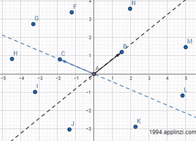
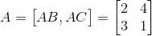
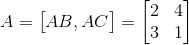
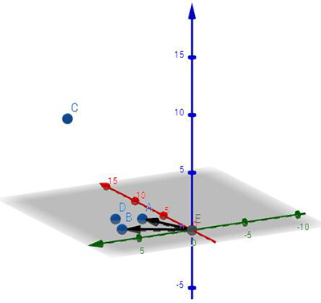
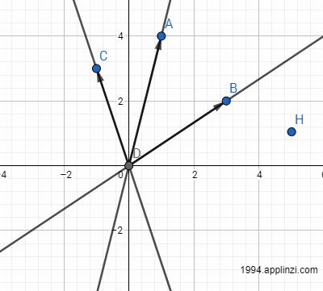
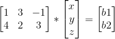
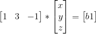
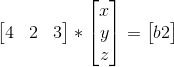
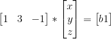
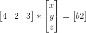

我们将该问题转换成上一节介绍的按列分割矩阵，也就是问，矩阵A的所有列向量，是否铺满了b的所有维度？
说的通透点，如果b=(x1,x2)，那么b的维度就是2维平面，如果b=(x1,x2,x3)，那么b的维度就是3维空间，如果b=(x1,x2,……,xn)，那么b的维度就是n维空间。
首先来看2维平面的情况，如果矩阵A有两条线性不相关的列向量，那么不就能铺满一个2维平面？
什么叫线性不相关？
简单来讲，如果是2维平面，两条向量不共线就是线性不相关；如果是3维空间，3条向量不共面就是线性不相关
严谨的讲法得看定义：
如果有一组向量AB，AC，……，AN，如果存在一组不全为0的解（x1,x2，……，xn）使x1*AB+x2*AC+……+xn*AN=O(零向量)，那么这组向量线性相关。如果不存在则线性不相关
如下图的向量AB跟AC，在该平面上有许多任意点（F~N），选取任意点，必定存在一个解(x,y)使向量AB和AC能够合成AF~AN
简单来讲，如果是2维平面，两条向量不共线就是线性不相关；如果是3维空间，3条向量不共面就是线性不相关
严谨的讲法得看定义：
如果有一组向量AB，AC，……，AN，如果存在一组不全为0的解（x1,x2，……，xn）使x1*AB+x2*AC+……+xn*AN=O(零向量)，那么这组向量线性相关。如果不存在则线性不相关

那么这不就说明向量AB和AC能够代表整个二维平面，毕竟面是由无数个点组成的。
回到矩阵上，AB和AC是矩阵A的2个列向量，也就是说矩阵A=[AB,AC]（想象成2*2的矩阵）的列空间是一个二维平面。同时这个二维平面也可以称作矩阵A的值域空间。
矩阵A=[AB,AC]，假定AB=(2,3),AC=(4,1)，那么

我们再来看下AX=b，如果结果b的点存在于矩阵A=[AB,AC]的列空间里，那么肯定有解，且只有一个解。如果结果b不存在矩阵A的列空间里（比如说存在在一个3维空间里），那么肯定无解。比如说下图矩阵A=[OA,OB]，如果结果b在D的位置，那么有唯一解，如果b点在C的位置，那么无解。


那么什么时候存在无数解？我们再来看一个矩阵A=[AB,AC,AD]（想象成2*3的矩阵），AB=(1,4),AC=(3,2),AD=(-1,3)，那么它的列空间仍然是一个平面。
为什么？因为三组向量都是二维的向量，缺乏第三维的位置（或者第三维位置为0），也就是说三组向量是共面的，肯定存在一组(x,y,z)使x*AB+y*AC+z*AD=(0,0)。换句话说，这三个向量线性相关。只有2个（3个中任意2个）向量线性不相关。
这时就可以引入矩阵的秩的介绍
矩阵的秩是矩阵的列秩和行秩的简称,因为行秩=列秩，所以统称为矩阵的秩。具体原因可以看番外篇：聊聊行秩？=列秩
矩阵的列秩是其列空间覆盖范围的维数，同理，行秩也是其行空间覆盖范围的维数。
比如拿上面的矩阵A为例，其列秩为2,因为其列空间只是一个二维平面；
那么对于行秩，其行空间[跟列空间类似，只是横着分割矩阵]就是向量(2,3,7)和向量(1,4,8)构成的空间，很明显只有两条向量只能构成一个二维平面（注意跟列空间的二维平面不是同个平面！）
那如果是一个4*8的矩阵，其秩是多少？
首先看矩阵的列空间，其8组向量是否线性相关，如果是，把线性相关的向量去掉（比如去掉4组），最后剩下的向量个数（4个）就是矩阵的列秩，也就是矩阵的秩=4。
同理也可以看矩阵的行空间，其4组向量是否线性相关，如果是，把线性相关的向量去掉，最后剩下的向量个数就是矩阵的行秩，也是矩阵的秩。注意，行秩一定等于列秩。
对于刚刚的矩阵A=[AB,AC,AD]，如果结果b刚好落在其列空间里，这时会出现什么情况？我们可以先固定AC方向的长度，然后找到剩余的向量，再分解成AB与AD向量的结合（注：图中DB即AC向量，DA即AB向量，DC即AD向量，H即结果b位置）
矩阵的秩是矩阵的列秩和行秩的简称,因为行秩=列秩，所以统称为矩阵的秩。具体原因可以看番外篇：聊聊行秩？=列秩
矩阵的列秩是其列空间覆盖范围的维数，同理，行秩也是其行空间覆盖范围的维数。
比如拿上面的矩阵A为例，其列秩为2,因为其列空间只是一个二维平面；
那么对于行秩，其行空间[跟列空间类似，只是横着分割矩阵]就是向量(2,3,7)和向量(1,4,8)构成的空间，很明显只有两条向量只能构成一个二维平面（注意跟列空间的二维平面不是同个平面！）
那如果是一个4*8的矩阵，其秩是多少？
首先看矩阵的列空间，其8组向量是否线性相关，如果是，把线性相关的向量去掉（比如去掉4组），最后剩下的向量个数（4个）就是矩阵的列秩，也就是矩阵的秩=4。
同理也可以看矩阵的行空间，其4组向量是否线性相关，如果是，把线性相关的向量去掉，最后剩下的向量个数就是矩阵的行秩，也是矩阵的秩。注意，行秩一定等于列秩。

不难发现，随着AC（图中为DB）长度的变化，分别对应一个分解结果，也就分别对应一个解。可以预见，AC（图中为DB）方向长度的变化是无数多的，所以解也是有无数多个。
我们也可以从行空间来看，其行向量可以转成如下：





其解为两个平面的相交，两个平面相交成一条直线，即解为一条直线，所以有无数多解。
我们再从另外一方面来看这个问题。AX=b，假设A是一个m*n的矩阵，其秩为r。
当r=n=m时(满秩矩阵)，矩阵A是个方阵，AX=b有唯一解(b全都位于A的列空间里)。
当r=n<m(列满秩)时，AX=b要么无解，要么有唯一解(b落在A的列空间里才有唯一解，否则无解)。
当r=m<n时(行满秩)，AX=b有无数解(b全都落在A的列空间里，但列向量个数多于列空间维数导致向量组合有无数种)。
当r<m,r<n时，AX=b要么无解，要么有无数解(b落在A的列空间里才有解，且由于列空间维数小于列向量个数，所以会出现无数解)。
最后总结一番，对于AX=b，可以从行空间或列空间来看待矩阵A，再来看b所处的位置来判断是否有解。但我还是喜欢从列空间来分析其解的存在与否，同时，矩阵的秩也是判断有无解的重要标志。那如何求出解，本章没有详细介绍，欢迎看下一章节消元法？矩阵转换？